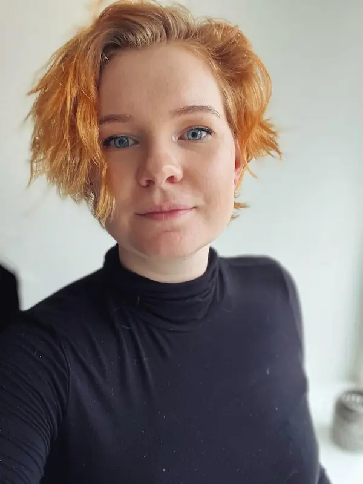

Info

Kort om mig
Kaldenavn:
Chris, Chrys, Chrylle, Chrysli, Chrissy
Styrker:
Overblik, ambitiøs, lærevillig, gåpåmod, ansvarlig
Svagheder:
Ostepops
Hobbier
Fitness, tegning, mindfulness, storytelling, rollespil, xbox
Hvad kan jeg?
- Værktøjer/programmer:
- Photoshop
- Illustrator
- Bridge
- XD
- Figma
- Visual Code Studio
- Github
- Evner og fagligheder:
- Content Creation
- Projektstyring
- UX/UI
- Digital Design
- Grafisk Design
- Billedbehandling
- Web Development
- Web Design
- Prototyping
- Sprog og kodebiblioteker:
- HTML
- CSS
- Javascript
- Astro
- React
- Next
- Typescript
Hvad kan jeg tilbyde?
- Stor erfaring med at være i et fagligt, kreativt designmæssigt arbejdsmiljø.
- På grund af allerede erfaring bruges uddannelsen på at fokusere på FrontEnd og andre ting, jeg ikke har benyttet mig så meget af før.
- Analytisk, problemløsende og organiseret sind
- Fokus på digital bæredygtighed og design, hvilket er meget oppe i tiden.
- Bruger fritiden på Code Academy og grafisk arbejde for foreningsmiljøer
- En optimistisk, engageret, lærevillig frontend praktikant